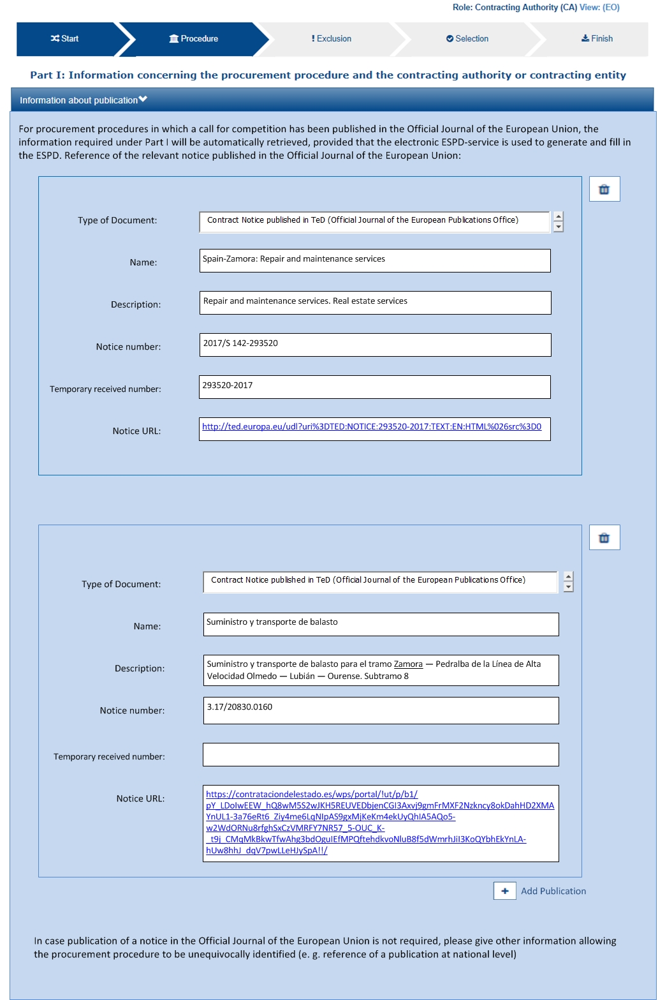
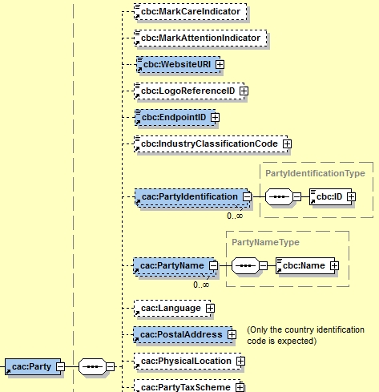

The ESPD Request Document
ESPD Request Business Requirements
The ESPD-EDM models the business and information requirements in alignment with the works developed by e-Sens, which uses the identifier Trdm070 to refer to the business requirements regarding the ESPD Request transaction. See formal information requirements related to the ESPD Request transaction in the document Business Requirements: ESPD request transaction (Trdm070), by e-Sens.
ESPD Request XSD Schema
The ESPD-EDM uses the UBL-2.3 document named QualificationApplicationRequest.xsd XSD Schema. This schema can be found under the folder ubl-2.3/xsdrt/maindoc (or the equivalent documented xsd folder).
The figure below shows the XSD Schema defined by UBL-2.3 for the document "Qualification Application Request". This schema replaces the previous scheme form UBL 2.2.
The figure below shows a diagram representing the UBL-2.3 XSD Schema. Only the first level components of the schema are shown. The inner sub-elements and sub-classes are covered in detail in the following sub-sections of this document.

Figure 11: QualificationApplicationRequest-2.3 main elements.
ESPD Request cardinalities
As you can see the UBL-2.3 Schema is quite flexible as, except for a few cases practically all the elements are optional.
The ESPD-EDM model, however, adds a few more restrictions regarding the cardinalities of some elements. These can be seen in the diagram below, which presents the ESPD-EDM structure for the ESPD Request with its own cardinality restrictions.

Figure 12. ESPD-EDM 'QualificationApplicationRequest', UML diagram
If you compare both figures you will observe that:
-
The cardinalities of the root common basic components, such as cbc:ID, cbc:UUID, are different for the ESPD than for UBL-2.3;
-
Similarly, the cardinalities of aggregate components like cac:ContractingParty and cac:TenderingCriterion are different to the UBL-2.3 ones.
The cardinality constraints added by the ESPD are not defined in the XSD Schema. In order to control these constraints the ESPD-EDM uses ISO Schematron assertions. The ESPD-EDM distribution package provides Schematron schemata and CVA files for the validation of the XML instances (folder /validation).
Root elements
The table below lists the elements that are expected in the ESPD Request and provides details on the cardinalities and usage of those elements.
|
A note about the Business Rules identifiers From this point on in the document, the tables defining classes and its properties refer frequently to business rules. As stated in the e-Sens BIS document, "[..] business rules are sets of rules that clarify the content of instances by stating mandatory fields, fixed values (like code lists), dependency between fields in the same object and dependency between different objects". Information requirement: Beware that all theses documents do share the same business rule identifiers (e.g. tbrxx-yyy for Business Requirement Identifiers in ESPDInt, and BR-Type-Id#n for the Test Cases technical rules). |
Table 5. Class QualificationApplicationRequest, components required by the ESPD-EDM
Document name: |
QualificationApplicationRequest |
Definition 1: |
"A structured electronic business document for requesting qualification information through an ESPD (conform to an ESPD template). Directive 2014/24/EU, Art. 59." (source: ESPD Request transaction (Trdm070)). Document provided by a buyer defining the exclusion and selection criteria for a given procurement procedure. |
Business rule(s): |
None |
File: |
/ubl-2.3/xsd/maindoc/UBL-QualificationApplicationRequest-2.3.xsd |
| Components | Type | Card | Description | Requirements |
|---|---|---|---|---|
cbc:UBLVersionID |
Identifier |
1 |
Identifies the earliest version of the UBL 2 schema for this document type that defines all of the elements that might be encountered in the current instance. |
Information Requirement: tbr070-002. Rule: Use the value "2.3". Use also "OASIS-UBL-TC" for the schemeAgencyID attribute. Rule scope: Common (BR-OTH-05, 2.BR-OTH-02) |
cbc:CustomizationID |
Identifier |
1 |
Identifies a user-defined customization of UBL for a specific use. tbr070-001. |
Information Requirement: Rule: For the ESPD we use the value "urn:www.cenbii.eu:transaction:biitrdm070:ver3.0". Compulsory use of the value "CEN-BII" for the schemeAgencyID attribute. Rule scope: Common (BR-OTH-02, BR-OTH-06) |
cbc:ProfileID |
Identifier |
0..1 |
An identification of the specification containing the total set of rules regarding semantic content, cardinalities and business rules to which the data contained in the instance document conforms. The identification may include the version of the specification as well as any customizations applied. |
Information Requirement: tbr070-002. Rule: Use the value "41". Use also "CEN-BII" for the scheme AgencyID attribute. Rule scope: Common (BR-OTH-07, BR-OTH-02) |
cbc:ProfileExecutionID |
Identifier |
1 |
The identification and version of the ESPD Exchange Data Model used to create the XML instance. The identification may include the exact version of the specification. |
Information Requirement: tbr070-002. Rule: Compulsory use of the CodeList ProfileExecutionID. Use the value "EU-COM-GROW" for th SchemeAgencyID attribute. Rule scope: Common (BR-OTH-01, BR-OTH-01#13, BR-OTH-03) |
cbc:ID |
Identifier |
1 |
An identifier for this document, normally generated by the system that creates the ESPD document, or the organisation responsible for the document (e.g. the buyer, e.g. a buyer, or the supplier, e.g. an economic operator). An identifier for this document, normally generated by the system that creates the ESPD document, or the organisation responsible for the document (e.g. the buyer, e.g. a buyer, or the supplier, e.g. an economic operator). The identifier enables positive referencing the document instance for various purposes including referencing between transactions that are part of the same process. |
Information Requirement: tbr070-002. Rule: Compulsory use of schemeAgencyID attribute. Use it to identify the organisation responsible for the document. Rule scope: Common (BR-OTH-02) |
cbc:CopyIndicator |
Indicator |
0..1 |
Indicates whether this document is a copy (true) or not (false). |
Information Requirement: tbr070-002. Rule: It is a good practice to use the CopyIndicator component if the same document is forwarded several times to the same or to different destinations. Use it in combination with the UUID identifier: copies of an ESPD document should be identified with distinct UUIDs. |
cbc:UUID |
Identifier |
1 |
A universally unique identifier that can be used to reference this ESPD document instance. |
Information Requirement: tbr070-002. Rule: This UUID will be used to link the ESPD Response to its corresponding ESPD Request (thus its compulsoriness). Copies of a document must be identified with a different UUID. Compulsory use of schemeAgencyID attribute. Rule scope: BR-OTH-02 |
cbc:ContractFolderID |
Identifier |
1 |
An identifier that is specified by the buyer and used as a reference number for all documents in the procurement process. It is also known as procurement project identifier, procurement reference number or contract folder identifier. A reference to the procurement procedure to which a Qualification request document and the delivered response documents are associated. |
Information Requirement: tbr070-007. Rule: Try always to use the reference number issued by the buyer. This information will be provided in eForms using the same cbc:ContractFolderID, therefore the ESPD should include the same identifier in order to link both models, and shall be globally unique. This number in combination with a registered buyer ID (e.g. the VAT number) results in a universally unique identifier of the procurement procedure. Rule scope: BR-SC-10 |
cbc:IssueDate |
Date |
1 |
Date when the document was issued by the buyer. |
Information Requirement: tbr070-002. Rule: Format "YYYY-MM-DD". |
cbc:IssueTime |
Time |
0..1 |
Time when the document was issued by the buyer. |
Information Requirement: tbr070-002. Rule: Format "hh:mm:ss". |
cbc:VersionID |
Identifier |
0..1 |
The version identifying the content of this document. |
Information Requirement: tbr070-014. Rule: Changes in content should entail the modification of the version identifier and a reference to the previous version. |
cbc:PreviousVersionID |
Identifier |
0..1 |
The version identifying the previous modification of the content of this document. |
Information Requirement: tbr070-014. Rule: None |
cbc:ProcedureCode |
Code |
1 |
The type of the procurement administrative procedure according to the EU Directives. |
Information Requirement: tbr070-007. Rule: For the ESPD, this information will be linked to eForms. And ESPD should include the same procedure code as the one stated in eForms notices. |
cac:ContractingParty |
Associated class |
1 |
The buyer or contracting entity who is buying supplies, services or public works using a tendering procedure as described in the applicable directive (Directives 2014/24/EU, 2014/25/EU). |
Information Requirement: tbr070-01. Rule: UBL-2.3 defines multiple cardinality ContractingParties presumably to allow joint procurements. However the ESPD only expects data about one buyer. The decision was made that in case of joint procurement the data collected in the ESPD would be about the leader of the joint procurement procedure. In ESPD the contracting party information will come from eForms. Which also uses cac:ContractingParty to specify the information about buyer. |
cac:ProcurementProject/cbc:Description |
Text |
1 |
Text describing this procurement project. |
This element is required in the ESPD, however it should be identical to that provided in eForms. In general the corresponding eForm should feed the corresponding ESPD with the corresponding data. |
cac:TenderingCriterion |
Associated class |
1..n |
A tendering criterion describes a rule or a condition that is used by the contracting body to evaluate and compare tenders by economic operators and which will be used for the exclusion and the selection of candidates to the award decision. |
Information Requirement: tbr70-003, tbr70-009. Rule: (see examples further below in this document) |
cac:TenderingCriterion/cac:ProcurementProjectLotReference/cbc:ID |
Identifier |
0..n |
One or more of the procurement project lots Identifier to which this criterion can be related to. |
Information Requirement: (see section Lot Management) Rule: This element is mandatory for all Selection Criteria with cardinality 1..n because different Selection Criteria can be associated with different procurement lots. This element is not necessary for exclusion grounds because exclusion grounds are applied to all procurements. |
cac:AdditionalDocumentReference |
Associated class |
0..n |
A reference to an additional document associated with this document. |
Information Requirement: tbr70-007. Rule: For procurement procedures above the threshold it is compulsory to make reference to the Contract Notice of the procedure published in TED. See section "Reference to the Contract Notice" for a complete example. |
Lot Management
The ESPD includes a change regarding how lots are managed. This is the outcome of the alignment with eForms.
In this new version the ESPD will have the following logic:
There will be 1 ESPD request stating the Exclusion Criteria and the Selection Criteria, but with differences respect version 2.1.1. The figure below shows the logic:
Figure 13. Overview of new lot management approach.
The ESPD request include exclusion grounds that are general for all the Lots in which the procedure is divided in. However, for Selection Criteria is different since in the procedure is possible to have Lots with different selection criteria. Therefore, in the ESPD request the different Selection Criteria will have to include the reference to the lots which applies. It will be done using the UBL 2.3 cac:ProcurementProjectLotReference that includes cbc:TenderingCriterion.
The following XML example shows how it is done:
<!--- Root elements eliminated for the sake of brevity -->
<cac:TenderingCriterion>
<cbc:ID schemeID="criterion" schemeAgencyID="EU-COM-GROW" schemeVersionID="3.0.1">499efc97-2ac1-4af2-9e84-323c2ca67747</cbc:ID>
<cbc:CriterionTypeCode listID="http://publications.europa.eu/resource/authority/criterion" listAgencyID="OP" listVersionID="20210616-0">gen-year-to</cbc:CriterionTypeCode>
<cbc:Name>General yearly turnover</cbc:Name>
<cbc:Description>Its general yearly turnover for the number of financial years required in the relevant notice, the in the ESPD, the relevant notice or the ESPD is as follows:</cbc:Description>
<cac:ProcurementProjectLotReference>
<cbc:ID schemeID="Criterion" schemeAgencyID="EU-COM-GROW" schemeVersionID="3.0.1">LOT-00000</cbc:ID>
</cac:ProcurementProjectLotReference>
<cac:ProcurementProjectLotReference>
<cbc:ID schemeID="Criterion" schemeAgencyID="EU-COM-GROW" schemeVersionID="3.0.1">LOT-00001</cbc:ID>
</cac:ProcurementProjectLotReference>
<cac:SubTenderingCriterion>
<cbc:ID schemeID="criterion" schemeAgencyID="EU-COM-GROW" schemeVersionID="3.0.1">e6b21867-95b5-4549-8180-f4673219b179</cbc:ID>
<cbc:Name>[Name of the National Criterion]</cbc:Name>
<cbc:Description>[Description of the National Criterion ]</cbc:Description>
<cac:TenderingCriterionPropertyGroup>
<cbc:ID schemeID="criterion" schemeAgencyID="EU-COM-GROW" schemeVersionID="3.0.1">8c39b505-8abe-44fa-a3e0-f2d78b9d8224</cbc:ID>
<cbc:PropertyGroupTypeCode listID="property-group-type" listAgencyID="EU-COM-GROW" listVersionID="3.0.1">ON*</cbc:PropertyGroupTypeCode>
<cac:TenderingCriterionProperty>
<cbc:ID schemeID="criterion" schemeAgencyID="EU-COM-GROW" schemeVersionID="3.0.1">ed2a13ed-cf3d-478e-888d-cb9b89f55020</cbc:ID>
<cbc:Description>[Additional information; e.g. no evidences online]</cbc:Description>
<cbc:TypeCode listID="criterion-element-type" listAgencyID="EU-COM-GROW" listVersionID="3.0.1">CAPTION</cbc:TypeCode>
<cbc:ValueDataTypeCode listID="response-data-type" listAgencyID="EU-COM-GROW" listVersionID="3.0.1">NONE</cbc:ValueDataTypeCode>
</cac:TenderingCriterionProperty>
<cac:TenderingCriterionProperty>
<cbc:ID schemeID="criterion" schemeAgencyID="EU-COM-GROW" schemeVersionID="3.0.1">b21ab072-e5b6-495c-ad6e-4ead6993ede5</cbc:ID>
<cbc:Description>Your Answer</cbc:Description>
<cbc:TypeCode listID="criterion-element-type" listAgencyID="EU-COM-GROW" listVersionID="3.0.1">QUESTION</cbc:TypeCode>
<cbc:ValueDataTypeCode listID="response-data-type" listAgencyID="EU-COM-GROW" listVersionID="3.0.1">INDICATOR</cbc:ValueDataTypeCode>
</cac:TenderingCriterionProperty>
</cac:TenderingCriterionPropertyGroup>
</cac:SubTenderingCriterion>
<cac:Legislation>
<cbc:ID schemeID="criterion" schemeAgencyID="EU-COM-GROW" schemeVersionID="3.0.1">635a537c-57bf-4beb-8b69-d97d49382e1f</cbc:ID>
<cbc:Title>[Legislation title]</cbc:Title>
<cbc:Description>[Legislation description]</cbc:Description>
<cbc:JurisdictionLevel>EU</cbc:JurisdictionLevel>
<cbc:Article>[Article, e.g. Article 2.I.a]</cbc:Article>
<cbc:URI>http://eur-lex.europa.eu/</cbc:URI>
<cac:Language>
<cbc:LocaleCode listID="language" listAgencyName="OP" listVersionID="20211208-0">ENG</cbc:LocaleCode>
</cac:Language>
</cac:Legislation>
<cac:TenderingCriterionPropertyGroup>
<cbc:ID schemeID="criterion" schemeAgencyID="EU-COM-GROW" schemeVersionID="3.0.1">5ca58d66-3ef1-4145-957c-45d5b18a837f</cbc:ID>
<cbc:PropertyGroupTypeCode listID="property-group-type" listAgencyID="EU-COM-GROW" listVersionID="3.0.1">ON*</cbc:PropertyGroupTypeCode>
<cac:TenderingCriterionProperty>
<cbc:ID schemeID="criterion" schemeAgencyID="EU-COM-GROW" schemeVersionID="3.0.1">42824f1f-3574-4e53-80ca-501d22e85ef8</cbc:ID>
<cbc:Description>Minimum requirement</cbc:Description>
<cbc:TypeCode listID="criterion-element-type" listAgencyID="EU-COM-GROW" listVersionID="3.0.1">REQUIREMENT</cbc:TypeCode>
<cbc:ValueDataTypeCode listID="response-data-type" listAgencyID="EU-COM-GROW" listVersionID="3.0.1">AMOUNT</cbc:ValueDataTypeCode>
<!-- No answer is expected here from the economic operator, as this is a REQUIREMENT issued by the buyer. Hence the element 'cbc:ValueDataTypeCode' contains the type of value of the requirement issued by the buyer -->
<cbc:ExpectedAmount currencyID="EUR">100000</cbc:ExpectedAmount>
</cac:TenderingCriterionProperty>
<!--- Rest of the elements of the criterion have been eliminated for the sake of brevity -->In Economic Operator’s side it is different, as can be read in the image above there will be as many ESPD Response as Lots or Group of Lots the EO wishes to tender for. If the EO wants to participate in three Lots, the EO will need to fill in 3 ESPD Response. For more details on this, please see section ESPD Response.
Lots identifiers:
This version of the ESPD changes the form to identify the Lots and Group of Lots taking the eForms format. This changes is done towards the interoperability of both models.
Until version 2.1.1, the lots have been identified with the following structure "Lot1, Lot2, Lot3". With the new approach (eForms) the Lots identifiers will be as follows: (eForms) the Lots identifiers will be as follows:

Figure 14: Lot Identifiers according to eForms schema
EU and notice publications
REQUIREMENT tbr070-007 |
The Buyer must be able to provide information about official journals or gazettes where the procurement procedure is announced. For procurement projects above the threshold it is compulsory to refer to the Contract Notice published in TED. |
ESPD conformant software applications will have to provide the means for the user to supply references to EU and notice publications about the procurement procedure, and notably about the Notices to which the ESPD is related.
Mock-up
The Figure below is a mock-up representation of how to collect the data expected to reference publications on official gazettes or journals. This mechanism can also be used for contracts below the threshold, obviously.

Figure 14. Publications, mock-up
XSD Schema
The ESPD EDM uses the UBL component cac:AdditionalDocumentReference to allow the inclusion of references to documents that they might consider relevant, and amongst them the reference to the Contract Notice on the TED (for above-the-threshold contracts) and to possible Notices on national journals and boards.
The class used for this, cac:AdditionalDocumentReference ''is a'' cac:DocumentReference class defined in the UBL-2.3 Common Aggregate Components library).

Figure 15. cac:DocumentReference, XSD diagram
The class cac:AdditionalDocumentReference aggregates a subclass cac:Attachment that is used by ESPD to place the URI, name of the document and descriptions.

Figure 16. Associated class cac:ExternalReference, XSD diagram
Expected elements
As you can see from the XSD Schema the cac:DocumentReference class has a rich data structure. However, to refer to publications such as the TED and national publications, the ESPD most expects at most the following data:
Table 6. Reference to additional documents, expected elements
Class name: |
cac:AdditionalDocumentReference |
Definition: |
A reference to an additional document associated with this document. |
Business rule(s): |
Common (BR-COM-10) |
File: |
ubl-2.3/xsdrt/common/UBL-CommonAggregateComponents-2.3.xsd |
Path: |
/QualificationApplicationRequest/cac:AdditionalDocumentReference |
Context of Use: |
In this case this reference points at a document published on the Supplement of the European Official Journal or on a national journal. |
| Components | Type | Card | Description | Requirements |
|---|---|---|---|---|
cbc:ID |
Identifier |
1 |
The identifier for the referenced document, generally issued by the entity responsible for the document. |
Information Requirement: tbr070-007. Rule: If the document referenced is a Contract Notice published on TED the ID must follow the scheme defined by the Publications Office: [][][][]/S [][][]-[][][][][][] (e.g. 2015/S 252-461137). If at the time of drafting the ESPD document the Publication Office has not published yet the Contract Notice the value 0000/S 000-000000 value must be used to indicate that a temporary identifier is being used. Rule scope: Common (BR-COM-10#1, BR-OTH-02) |
cbc:UUID |
Identifier |
0..1 |
A universally unique identifier that can be used to reference this ESPD document instance. |
Information Requirement: tbr92-013. Rule: If the referenced document has a UUID to identify its particular instance refer to that UUID here. |
cbc:DocumentTypeCode |
Code |
1 |
The type of document being referenced, expressed as a code. |
Information Requirement: tbr070-007. Rule: For the ESDP-EDM it is compulsory use of the Code List "docref-content-type". See example below on how to specify the OJS Contract Notice. If, for other documents, the type of document is not available in this list, provide the code "Other" and describe the content in the element DocumentType. Rule scope: Common (BR-OTH-01, BR-OTH-01#3, BR-OTH-03) |
cbc:DocumentType |
Text |
0..1 |
The type of document being referenced, expressed as text. |
Information Requirement: tbr070-007. Rule: Optionally use the attribute languageID to indicate the language of the text. Use the Code List "Language" for the value of the languageID attribute. Rule scope: Common (BR-OTH-01, BR-OTH-01#4, BR-OTH-03) |
cbc:IssueDate |
Date |
0..1 |
Date when the document was issued by the buyer. |
Information Requirement: tbr92-013. Rule: Format "YYYY-MM-DD". If available in the referenced document place here the data of publication by the buyer. |
cbc:IssueTime |
Time |
0..1 |
Time when the document was issued by the buyer. |
Information Requirement: tbr92-013. Rule: If available in the referenced document place here the time of publication by the buyer. |
Beware that the ESPD document do not embed the content of referenced documents but instead make a reference to its source. Thus the class 'DocumentReference' aggregates a 'cac:Attachment' class that allows for embedding the content or making reference to an external source of the content, which is the preferred way in ESPD (see XSD schema above):
Table 7. External Reference
Component name: |
cac:ExternalReference |
Definition: |
A reference to the authentic source of content of this document. |
File: |
ubl-2.3/xsdrt/common/UBL-CommonAggregateComponents-2.3.xsd |
Path: |
/QualificationApplicationRequest/cac:AdditionalDocumentReference/cac:Attachment/cac:ExternalReference |
| Components | Type | Card | Description | Requirements |
|---|---|---|---|---|
cbc:URI |
Identifier |
0..1 |
The Uniform Resource Identifier (URI) that identifies where the document is located. |
Information Requirement: tbr070-007. Rule: None. |
cbc:FileName |
Text |
0..1 |
The title of the document. |
Information Requirement: tbr070-007. Rule: Originally this field is the placeholder for the name of the file (e.g. PLACE-ContractNotice-2017-12452.xml. However, as the UBL component does not have a placeholder for a name or title, the ESPD documents use it for a short descriptive title of the document being referenced. |
cbc:Description |
Text |
0..n |
Short description of the document. |
Information Requirement: tbr070-007. Rule: If the document being referenced is a Notice being published on TED, use two description lines. Use the second description line to place therein the temporary number received from TED. See example and comments below. Rule scope: Common (BR-COM-10#2, BR-COM-10-S10, BR-COM-10-S20, BR-COM-10-S30) |
XML Example
The XML snippet below illustrates how to use the cac:AdditionalDocumentReference in the ESPDRequest XML document to refer to a Contract Notice published in TED and on a national procurement board:
<!--- Root elements eliminated for the sake of brevity -->
<!-- Reference to the Contract Notice published on TED -->
<cac:AdditionalDocumentReference>
<cbc:ID schemeAgencyID="EU-COM-OP">2017/S 142-293520</cbc:ID>
<cbc:DocumentTypeCode listID="docrefcontent-type" listAgencyID="EU-COM-GROW" listVersionID="3.0.1">TED_CN</cbc:DocumentTypeCode>
<cac:Attachment>
<cac:ExternalReference>
<!-- Beware XML URI fields may require encoded URLs -->
<cbc:URI schemeAgencyID="EU-COM-OP">http://ted.europa.eu/udl?uri%3DTED:NOTICE:293520-2017:TEXT:EN:HTML%026src%3D0</cbc:URI>
<cbc:FileName>Spain-Zamora: Repair and maintenance services</cbc:FileName>
<cbc:Description>Repair and maintenance services. Real estate services.</cbc:Description>
<cbc:Description>293520-2017</cbc:Description>
</cac:ExternalReference>
</cac:Attachment>
</cac:AdditionalDocumentReference>
<!-- Reference to the Contract Notice published on the Spanish Central Government eTendering Platform -->
<cac:AdditionalDocumentReference>
<!-- Contract Notice publishied on the Spanish Central eTendering Platform "PLACE" Plataforma de Contratacin del Sector Pblico -->
<cbc:ID schemeAgencyID="PLACE">3.17/20830.0160</cbc:ID>
<!-- Contract Notice (CN) published on a National Government Official Journal -->
<cbc:DocumentTypeCode listID="docrefcontent-type" listAgencyID="EU-COM-GROW" listVersionID="3.0.1">NOJCN</cbc:DocumentTypeCode>
<cac:Attachment>
<cac:ExternalReference>
<!-- Beware XML URI fields may require encoded URLs -->
<cbc:URI schemeAgencyID="PLACE">https://contrataciondelestado.es/wps/portal/!ut/p/b1/pY_LDoIwEEW_hQ8wM5S2wJKH5REUVEDbjenCGI3Axvj9gmFrMXF2Nzkncy8okDahHD2XMAYnUL1-3a76eRt6_Ziy4me6LqNIpAS9gxMjKeKm4ekUyQhIA5AQo5-w2WdORNu8rfghSxCzVMRFY7NR57_5-OUC_K-_t9j_CMqMkBkwTfwAhg3bdOguIEfMPQfthedkvoNluB8f5dWmrhJiI3KoQYbhEkYnLA-hUw8hhJ_dqV7pwLLeHJySpA!!/</cbc:URI>
<cbc:FileName>Suministro y transporte de balasto</cbc:FileName>
<cbc:Description>Suministro y transporte de balasto para el tramo Zamora Pedralba de la Lnea de Alta Velocidad Olmedo Lubin Ourense. Subtramo 8.</cbc:Description>
</cac:ExternalReference>
</cac:Attachment>
</cac:AdditionalDocumentReference>
</QualificationApplicationRequest>-
For TED Notices you must use the Publications Office Official Journal Supplement number in its original format [][][][]/S [][][]-[][][][][][], e.g. 2017/S 142-293520. Notice that the schemeAgencyID is EU-COM-OP (OP standing for 'Publications Office').
-
The jurisdiction scope of this document is typified in the Code List docref-content-type (see file /codelists/gc/DocRefContentType.gc in the distribution package). Beware that the name and content of this Code List has changed from the previous ESPD-EDM version 2.1.1.
-
The ESPD documents never embed the actual content. Rather the content is always referenced from its original source (alignment to the Once-Only-Principle).
-
The title of the CN has to be placed in the FileName field of the attachment. UBL does not provide a placeholder fo the title of the document.
-
In the case of publication on the TED, at ESPD Request preparation time, the procurer does not have yet the OJS number, but can receive a temporary CN identifier (Received Notice Number). To save this number in the DocumentReference component create two cbc:Description elements and use the second one to place this Received Notice Number. If you do not have a description for the CN then use a 'dummy' content for the first description, e.g. <cbc:Description>_</cbc:/Description>.
-
Notice how the schemeAgencyID is used in this example to specify that the national Agency that created this reference to the national publication (e.g. "PLACE" to refer to the ID of the national electronic board where the CN was published). The pattern of the ID is the one created by the Spanish buyer.
-
In this case the code NOJCN means 'Contract Notice (CN) published on a National Government Official Journal' (see file /codelists/gc/DocRefContentType.gc in the distribution package).
Contracting Body
Related information requirements
See formal requirements related to the contracting authorities in the e-Sens site: tbr070-001*
Mock-up
In principle, the ESPD-EDM asks for a few data about the procurer (i.e. the buyer, body or entity). The essential (compulsory) data for the contracting body are namely the one aimed to identify it, i.e. its official name and the country. The figure below represents a possible GUI interface for these two data. However the UBL specification provides many other data elements some of which may be interesting to include in the ESPD, notably data about the means to contact the contracting body (see below the list of elements possible in the ESPD).
Therefore software applications may take leverage of the richness of UBL-2.3 to collect also data about the buyer contact, end-point, and other data possible in the ESPD.

Figure 17. Data about the procurer, mock-up
XSD Schema
The UBL-2.3 model provides a component that fits the purpose of holding data about the procurer: the common aggregate component cac:ContractingParty.
Figure 18. cac:ContractingParty XSD Schema, global vision
The cac:ContractingParty class is a specialisation of cac:Party. Hence, the main data about the procurer is in this associated cac:Party component:

Figure 19. cac:Party XSD Schema, global vision
The cac:Party class in turn associates a very rich class that holds the data about the Party address, including the country (see the UBL-2.3 specification for the complete list of fields):

Figure 20. cac:PostalAddress, XSD Schema
Notice also that the class associated to cac:Party to place the data about how to contact the contracting body:

Figure 21. cac:Contact, XSD Schema
Expected elements
Table 8. Contracting body, expected elements
Class name: |
cac:ContractingParty |
Definition: |
The buyer or contracting entity who is buying supplies, services or public works using a tendering procedure as described in the applicable directive (e.g. Directives 2014/24/EU, 2014/25/EU). |
Business rule(s): |
Common (BR-REQ-20#1) |
File: |
ubl-2.3/xsdrt/common/UBL-CommonAggregateComponents-2.3.xsd |
Path: |
/QualificationApplicationRequest/cac:ContractingParty |
| Components | Type | Card | Description | Requirements |
|---|---|---|---|---|
cbc:BuyerProfileURI |
Identifier |
0..1 |
URL of the web section, in the contracting body web site, that contains information about the contracting body, the norms it applies when contracting, published calls for tenders, Prior Information Notices and Contract Notices as well as the related procurement documents, contract award notices, etc. |
Information Requirement: tbr070-006. Rule: Notices published at national level shall not contain information other than that contained in the notices dispatched to the Publications Office of the European Union or published on a buyer profile, but shall indicate the date of dispatch of the notice to the Publications Office of the European Union or its publication on the buyer profile (Directive 2014/24/EU, Art. 52.2). |
Table 9. Contracting body party, expected elements
Class name: |
cac:Party |
Definition: |
Main data placeholder structure for, in this case, the contracting body. |
File: |
ubl-2.3/xsdrt/common/UBL-CommonAggregateComponents-2.3.xsd |
Path: |
/QualificationApplicationRequest/cac:ContractingParty/cac:Party |
| Components | Type | Card | Description | Requirements |
|---|---|---|---|---|
cac:PartyIdentification/cbc:ID |
Identifier |
1 |
The national identifier of a contracting body as it is legally registered (e.g. VAT identification). |
Information Requirement: tbr070-001. Rule: When possible use the VAT identification of the contracting body (see the VIES platform for a EU cross-border national VAT number verification system). When not possible a different identifier may be used. The code list EOIDType may be used to indicate the type of identifier used as a value of the schemeID attribute, e.g. schemeID="VAT"). Rule scope: Common (BR-REQ-20#4, BR-OTH-02) |
cbc:WebsiteURI |
Identifier |
0..1 |
The website of the contracting body. |
Information Requirement: tbr070-006. Rule: For online services (e.g. Web Services, REST services, etc. use the component cac:EndPointID. |
cbc:EndPointID |
Identifier |
0..1 |
Electronic address of the contracting body. |
Information Requirement: tbr070-001. Rule: Use it for online services (e.g. Web Services, REST services, Delivery ID, ftp, etc. For the official web site of the Party use always the cac:Party/cbc:WebsiteURI). An end-point identifier MUST have a scheme identifier attribute (e.g.eSENSParty Identifier Scheme). Should be considered for all actors (buyer, service provider, economic operator) as an eDeliveryID. |
cac:PartyName/cbc:Name |
Text |
1 |
The name of the contracting body as it is registered. |
Information Requirement: tbr070-001. Rule: Mandatory. Use the official name of the contracting body. The PartyName class has an associated basic element "cbc:Name". See XML example below. Rule scope: Common (BR-REQ-20#2) |
Table 10. Contracting body postal address, expected elements
Class name: |
cac:PostalAddress |
Definition: |
Contractinng body address information. |
Business rule(s): |
None |
File: |
ubl-2.3/xsdrt/common/UBL-CommonAggregateComponents-2.3.xsd |
Path: |
/QualificationApplicationRequest/cac:ContractingParty/cac:Party/cac:PostalAddress |
| Components | Type | Card | Description | Requirements |
|---|---|---|---|---|
cbc:StreetName |
Text |
0..1 |
The main address line in an address. Usually the street name and number or post office box. |
Information Requirement: tbr070-006. Rule: None. |
cbc:CityName |
Text |
0..1 |
The common name of a city where the address is located. |
Information Requirement: tbr070-006. Rule: None. |
cbc:PostalZone |
Text |
0..1 |
The identifier for an addressable group of properties according to the relevant postal service, such as a ZIP code or Post Code. |
Information Requirement: tbr070-006. Rule: None. |
cac:Country/cbc:IdentificationCode |
Code |
1 |
A code that identifies the country. |
Information Requirement: tbr070-006. Rule: The country of the contracting body must always be specified. Compulsory use of the code list Country from EU Vocabularies). Rule scope: Common (BR-REQ-20#3, BR-OTH-01, BR-OTH-01#5, BR-OTH-03) |
cac:Country/cbc:Name |
Text |
0..1 |
The name of the country. |
Information Requirement: tbr070-006. Rule: None. |
Table 11. Contact of the contracting body, expected elements
Class name: |
cac:Contact |
Definition: |
Used to provide contacting information for a party in general or a person. |
File: |
ubl-2.3/xsdrt/common/UBL-CommonAggregateComponents-2.3.xsd |
Path: |
/QualificationApplicationRequest/cac:ContractingParty/cac:Party/cac:Contact |
| Components | Type | Card | Description | Requirements |
|---|---|---|---|---|
cbc:Name |
Text |
0..1 |
The name of the contact point. |
Information Requirement: tbr070-006. Rule: None. |
cbc:Telephone |
Text |
0..1 |
A phone number for the contact point. |
Information Requirement: tbr070-006. Rule: None. |
cbc:Telefax |
Text |
0..1 |
A fax number for the contact point. |
Information Requirement: tbr070-006. Rule: None. |
cbc:ElectronicMail |
Text |
0..1 |
An e-mail address for the contact point. |
Information Requirement: tbr070-006. Rule: None. |
Service Provider
REQUIREMENT tbr070-011 |
The ESPD request may contain information of identification regarding an ESPD service provider: Name, Party Identification, Endpoint ID. |
Service providers are officially recognised organisations that can supply ESPD Request documents (on behalf of the contracting body) with pre-filled information about the contracting body and additional information (e.g. liability statements, see tbr070-012)
The ESPD allows the provision of data about the service provider who produced the ESPD Request document (and equally for the ESPD Response document, on behalf of the economic operator).
Since the 2.1.1 does not include the cac:ServiceProvider as a 'document root component'. Instead, it uses the UBL-2.3 cac:ContractingParty/cac:Party associated class cac:ServiceProviderParty.
XSD Schema

Figure 22. cac:ServiceProvider XSD Schema
Notice that:
-
The cac:Party class aggregates the class cac:ServiceProviderParty; and
-
The cac:ServiceProviderParty class 'is a' Party. Hence it aggregates a cac:Party class too, and uses it to place the main data about the service provider (like name, address, end-point, etc.).

Figure 22. cac:ServiceProvider

Figure 23. cac:ServiceProvider/cac:Party elements expected for the service provider
Expected elements
Table 12. Service provider, expected elements
Class name: |
cac:Party |
Definition: |
Main information about the service provider. |
Business rule(s): |
None |
File: |
ubl-2.3/xsdrt/common/UBL-CommonAggregateComponents-2.3.xsd |
Path: |
/QualificationApplicationRequest/cac:ContractingParty/cac:Party/cac:ServiceProviderParty/cac:Party |
| Components | Type | Card | Description | Requirements |
|---|---|---|---|---|
cbc:WebsiteURI |
Identifier |
0..1 |
The website of the service provider. |
Information Requirement: tbr070-011. Rule: Use it for the official web site of the service provider. Reserve the EndPointID for online services (e.g. web, REST, ftp services, etc.) |
cbc:EndpointID |
Identifier |
0..1 |
Electronic address of the service provider. |
Information Requirement: tbr070-011. Rule: Use it for online services (e.g. Web Services, REST services, Delivery ID, ftp, etc. For the official web site of the Party use always the cac:Party/cbc:WebsiteURI). An end-point identifier MUST have a scheme identifier attribute (e.g.eSENSParty Identifier Scheme). Should be considered for all actors (buyer, service provider, economic operator) as an eDeliveryID. |
cac:PartyIdentification/cbc:ID |
Identifier |
1 |
The national identifier of a service provider as it is legally registered (e.g. VAT identification). |
Information Requirement: tbr070-011. Rule: An identifier for the service provider must always be provided. Compulsory use of the attribute SchemeAgencyID. When possible use the VAT identification of the service provider (see the VIES platform for a EU cross-border national VAT number verification system). See XML example below. The code list EOIDType may be used to indicate the type of identifier used as a value of the schemeID attribute, e.g. schemeID="VAT"). Rule scope: Common (BR-REQ-20#5, BR-OTH-02") |
cac:PartyName/cbc:Name |
Text |
1 |
The name of the service provider. |
Information Requirement: tbr070-011. Rule: The name of the service provider must always be specified. Supply the official registered name of the service provider. Rule scope: Common (BR-REQ-20#6) |
cac:PostalAddress/cac:Country/cbc:IdentificationCode |
Code |
1 |
The code that identifies the country of the service provider. |
Information Requirement: tbr070-011. Rule: The country of the service provider must always be specified. Compulsory use of the code list "Country" from EU Vocabulary, which includes 3-character codes and it is based on ISO. Rule scope: BR-REQ-20#7, BR-OTH-01, BR-OTH-01#5, BR-OTH-03 |
XML example
The XML snippet below shows how an example of how to supply the expected data for the service provider.
...
_<!--- Root elements eliminated for the sake of brevity -->_
<cac:ContractingParty>
<cac:Party>
<cac:PartyIdentification><cbc:ID schemeAgencyID="VIES">B82387770</cbc:ID> </cac:PartyIdentification>
<cac:PartyName><cbc:Name>Ministerio de Defensa</cbc:Name></cac:PartyName>
<cac:PostalAddress><cac:Country><cbc:IdentificationCode listID="http://publications.europa.eu/resource/authority/country" listAgencyID="OP" listVersionID="20211208-0">ES</cbc:IdentificationCode></cac:Country></cac:PostalAddress>
<cac:ServiceProviderParty>
<cac:Party>
<cbc:WebsiteURI>http://www.minhafp.gob.es/es-ES/Areas%20Tematicas/Patrimonio%20del%20Estado/Contratacion%20del%20Sector%20Publico/Paginas/ROLECE.aspx</cbc:WebsiteURI>
<cbc:EndpointID>http://www.minhafp.gob.es/ESPD/endpoint</cbc:EndpointID>
<cac:PartyIdentification>
<cbc:ID schemeAgencyID="AEAT">B36699932</cbc:ID>
</cac:PartyIdentification>
<cac:PartyName>
<cbc:Name>Registro Oficial de Licitadores y Empresas Clasificadas (ROLECE)</cbc:Name></cac:PartyName>
<cac:PostalAddress>
<cac:Country><cbc:IdentificationCode listID="http://publications.europa.eu/resource/authority/country" listAgencyID="OP" listVersionID="20211208-0">ESP</cbc:IdentificationCode></cac:Country>
</cac:PostalAddress>
</cac:Party>
</cac:ServiceProviderParty>
</cac:Party>
</cac:ContractingParty>
...-
ContractingParty non-compulsory elements have been omitted for the sake of brevity.
-
The service provider VAT number. The issuer Agency is the Spanish Tax Agency (AEAT). You can use the VIES platform to verify that the VAT number exists and is correct for Spain.
-
The registered name of the service provider is mandatory.
-
The country code of the service provider (ESP) is compulsory. You will need to use this code (ESP) to verify the VAT number in the VIES service.